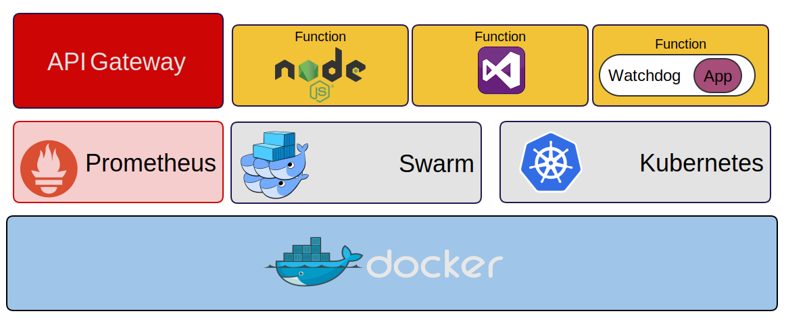
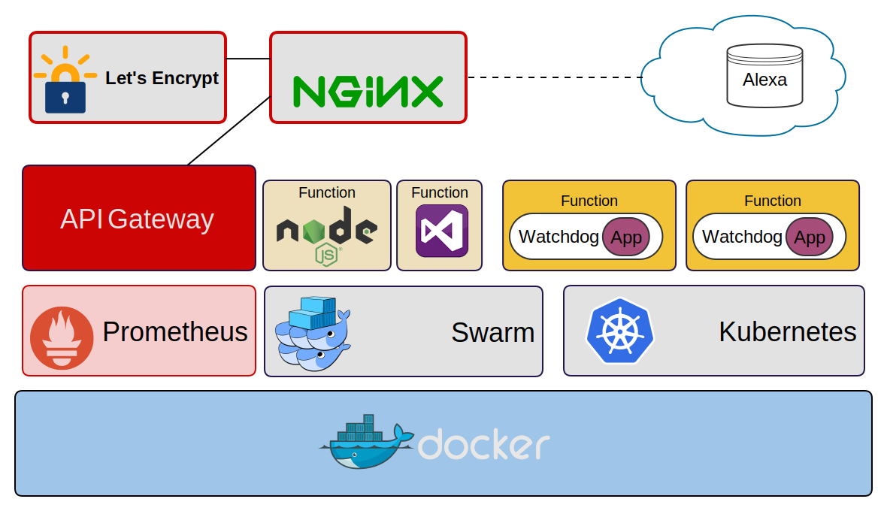
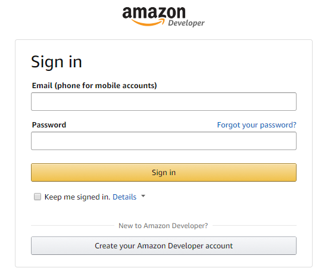
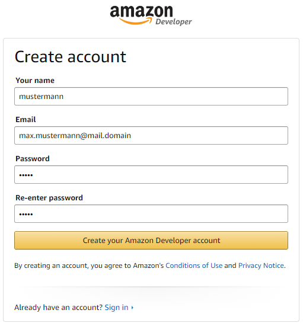
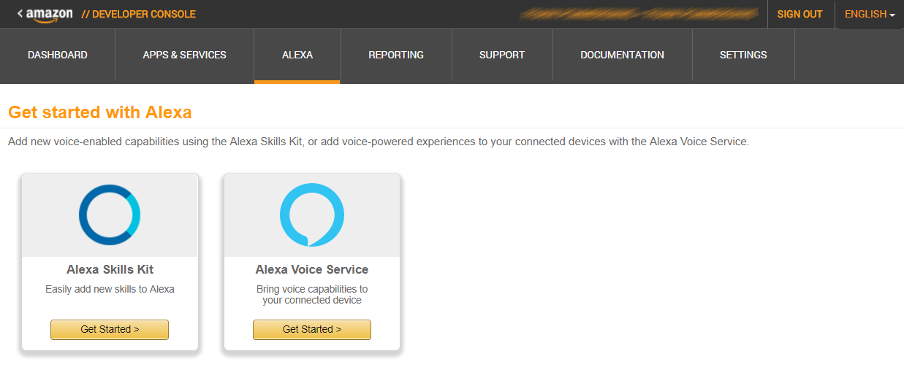
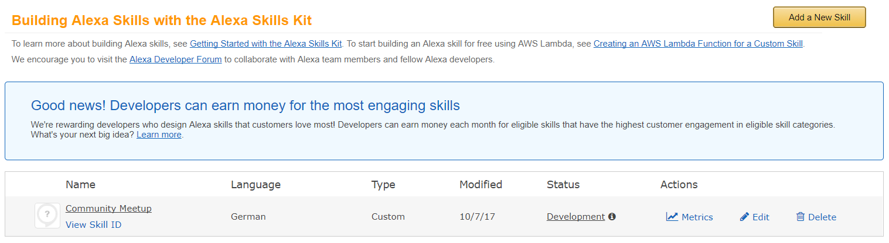
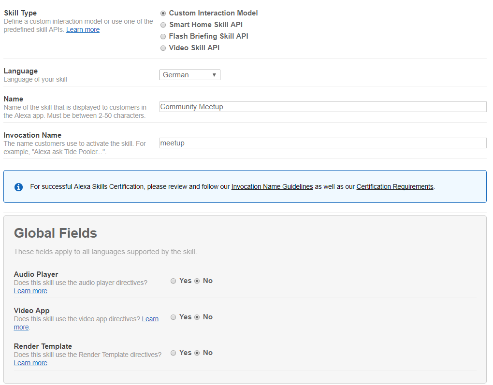
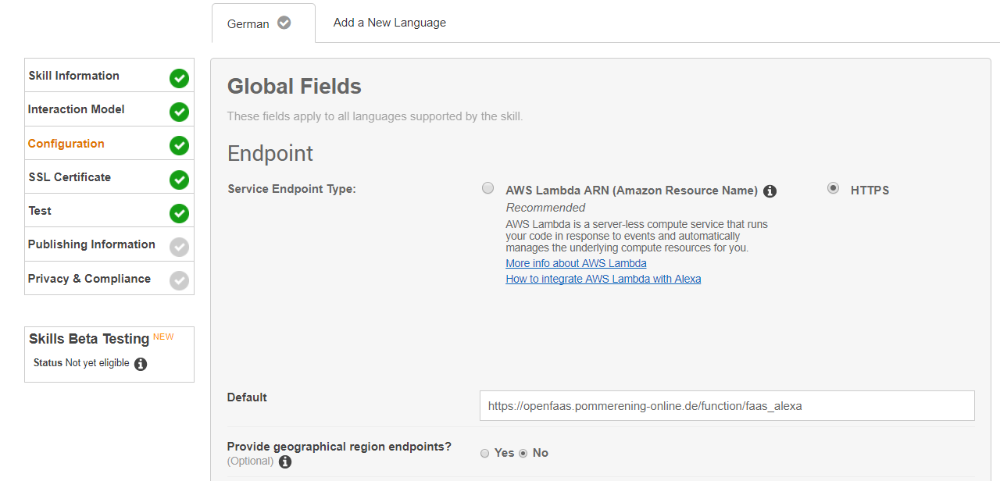

Serverless Computing mit OPENFAAS
.NET User Group Leipzig
29.01.2018
Frank Pommerening

- Senior - Softwareentwickler
- Consultant
- Softwarearchitekt
frank@pommerening-online.de
Gründung: Mai 2012
Anzahl Mitarbeiter: 8 feste
Branchenfokus: Energiebranche
- Consulting (fachlich & IT)
- Requirements Engineering / Projektmanagement
- IT-Fachprozess-Analyse / Dokumentation
- Software-Entwicklung
- Microservices, SOA, REST, OOA und OOD
- Microsoft Technologien z.B. .NET (C#), WPF, WCF
- Datenbanken (MS SQL Server / Oracle / MongoDB)
Docker Service

Service erstellen
docker service create [OPTIONS] IMAGE [COMMAND] [ARG...]| --name | Name für den Service |
| --network | Verwendetes Netzwerk |
| --publish, -p | Veröffentlicht den Port |
| --replicas | Zahl der gleichzeitig laufenden Instanzen |
| --config | Zuordnung einer Konfiguration (API 1.3+) |
| --secret | Zuordnung von Zugangsdaten (API 1.25+) |
Services entfernen
docker service rm SERVICEServices anzeigen
docker service ls [OPTIONS] Details zu / zum Services anzeigen
docker service inspect [OPTIONS] SERVICEServices hoch/runter skalieren
docker service scale SERVICE=ANZAHLLogs eines Services anzeinge
docker service logs [OPTIONS] SERVICEService aktualisieren API 1.24+
docker service update [OPTIONS] SERVICE| --config-[add][rm] | 1.30+ | Konfiguration ergänzen / entfernen |
| --network-[add][rm] | 1.29+ | Netzwerk ergänzen / entfernen |
| --secret-[add][rm] | 1.25+ | Zugangsdaten ergänzen / entfernen |
| --publish-[add][rm] | Veröffentlichtung ergänzen / entfernen | |
| --env-[add][rm] | Variable ergänzen / entfernen | |
| --limit-cpu / --limit-memory | Ressourcen ändern |
Docker Compose / Docker Stack

Zusammenfassung mehrerer Container zu einem Anwendungsstack
Compose-File
Eine yaml bzw. yml - Datei, welche die Struktur und Konfiguration des Anwendungsstacks definiert.Standard: docker-compose.yml
Versionen / Formate: Ohne Angabe im Header gilt Version 1!
| Format / Version | Docker-Version | Hinweise |
|---|---|---|
| 3.5 | 17.12.0+ | Isolation |
| 3.3 | 17.06.0+ | Config / Secrets |
| 3.0 3.1 3.2 |
1.13.0+ 1.13.1+ 17.04.0+ |
Empfohlene Version Erlaubt Verknüpfung mit Docker Swarm |
| 2.1 | 1.12.0+ | Healthcheck |
| 2.0 | 1.10.0+ | Networks, Dependency |
| 1.0 | 1.9.1+ | in zukünftiger Version deprecated / veraltet |
Lokale Anwendungsstack-Operationen
docker-compose [SUBCOMMAND] [OPTIONS] | Subbefehl | Optionen | Hinweise |
|---|---|---|
| pull | Lädt die im Anwendungsstack enthalten Images herunter | |
| create | --no-cache [SERVICE...] | Erstellt das Image bzw. den alle Images des Stack |
| up | -d [SERVICE] --build |
Erstellt / Lädt herunter / Startet einen Service inkl. Abhängigkeiten oder den gesamten Stack |
| start | [SERVICE] | Startet einen Service |
| Subbefehl | Optionen | Hinweise |
|---|---|---|
| stop | -t (timeout in s) [SERVICE] | Beendet einen Service |
| down | --rmi / -v | Stoppt und entfernt Container, Netzwerke, images und Volumes |
| rm | -v | Entfernt, nach Bestätigung, gestoppte Container und ggf. Volumes |
| exec | SERVICE COMMAND | Führt den übergeben Befehl im Service aus |
| top | [SERVICE] | Zeigt die Prozesse des Service bzw. des Anwendungsstack an |
Verteilte Anwendungsstack-Operationen
Stack bereitstellen / aktualisieren
docker stack deploy [OPTIONS] STACK| --compose-file, -c | Compose-File (API 1.25+) |
| --resolve-image | Fragt das Image von der Registry ab (API 1.30+) |
| --prune | Entfernt nicht mehr verwendete Services (API 1.27) |
Stack entfernen
docker stack rm STACKStacks anzeigen
docker stack ls [OPTIONS]Services eines Stack anzeigen
docker stack services [OPTIONS] STACKDocker Config / Docker Secret
Zugangsdaten / Konfiguration nur für verteilte System
Zugangsdaten verwalten (API 1.25+)
Wichtig: Inhalt kann per Docker-CLI angezeigt nicht werden.Zugangsdaten anlegen
docker secret create [OPTIONS] SECRET [file|-]Zugangsdaten anzeigen
docker secret lsZugangsdaten Details anzeigen
docker secret inspect [OPTIONS] SECRETZugangsdaten löschen
docker secret rm SECRETKonfiguration verwalten (API 1.30+)
Inhalt kann per Docker-CLI angezeigt werden.Konfiguration anlegen
docker config create [OPTIONS] CONFIG [file|-]Konfiguration anzeigen
docker config lsKonfiguration Details anzeigen
docker config inspect [OPTIONS] CONFIGKonfiguration löschen
docker config rm CONFIGGrundlagen und Architektur
- Framework für Serverless Functions
- Open source GitHub
- Integriertes Portal (UI) für Deployment / Test
- Ausführung auf Docker Swarm oder Kubernetes
- Skalierbar
- Synchrone / Asynchrone Ausführung
- Verwendung diverser Programmiersprachen GO, node.js, .NET ...
Die Funktionen erhalten die Anfragen per HTTP POST/GET und Port 8080.
Architektur
Function Watchdog
- kleiner HTTP-Server
- geschrieben in Golong
- erlaubt die Nutzung jedes Consolen-Programmes als Funktion
- Sendet HTTP-Anfrage an STDIN (Consolen Eingaben) des Zielprogramms
- Empfängt STDOUT (Consolen Ausgabe) und sendet sie per HTTP
Funktionsentwicklung mit .NET Core
Consolen-Anwendung
Verwendung des Function Watchdog (Empfehlung!)Webanwendung
Erlaubt die Verwendung von Caching und aufwendige Ressourcen ...Frameworks (Beispiele)
OpenFaaS CLI
GitHubFunktionen für Amazon Alexa
Architektur
Anlegen Entwickler-Zugang
https://developer.amazon.com/de/


Starten: ALEXA > Getting Started
Skill bearbeiten / neu erstellen
Allgemeine Informationen
 Erstellung:- Type
- Sprache
Erstellung / Bearbeitung:
- Name
- Aufruf
Interaction Modell
Befehle (Intent Schema)
Wichtig: auch Standardbefehle z.B. Hilfe vorsehenOptional: Defintion von Platzhaltern / Variablen (Slots)
{
"intents":
[
{ "intent": "greeting" },
{ "intent": "sendoff"
"slots": [{
"name": "NextMeetup",
"type": "AMAZON.DATE"
}]
},
{ "intent": "AMAZON.HelpIntent" },
{ "intent": "AMAZON.StopIntent" }
]
}Zuordnung Aufruf-Befehl (Sample Uterances)
greeting sag hallo
greeting beginne treffen
breaknow pause
sendoff sag auf wiedersehen
sendoff beende treffen
sendoff schluss jetztDefinition Variablentypen (Custom Slot Types) - Optional
Globale Einstellungen z.B. Endpunkt
Endpunkt muss verschlüsselte Kommunikation (HTTPS) unterstützen. SSL-Zertifikat für Endpunkt
- Zertifikat für definierten Endpunkt (auch Let's Encrypt möglich)
- Wild Card Zertifikat z.B. von Thawte
- Selbst-signiertes Zertifikat
Testen

Function-Entwicklung (Auswahl)
node.js: alexa-skills-kit-sdk-for-nodejs (Offiziell).NET: alexa-skills-dotnet (Community)
Manuell auf Basis des json-Schema
Noch nicht genug von OpenFaaS und Alexa
Workshop Serverless Computing mit OpenFaaS
Workshop (An)sprechende Anwendungen mit Alexa

Berlin 17./ 18. März 2018
Anmeldung ab 01.02.2018